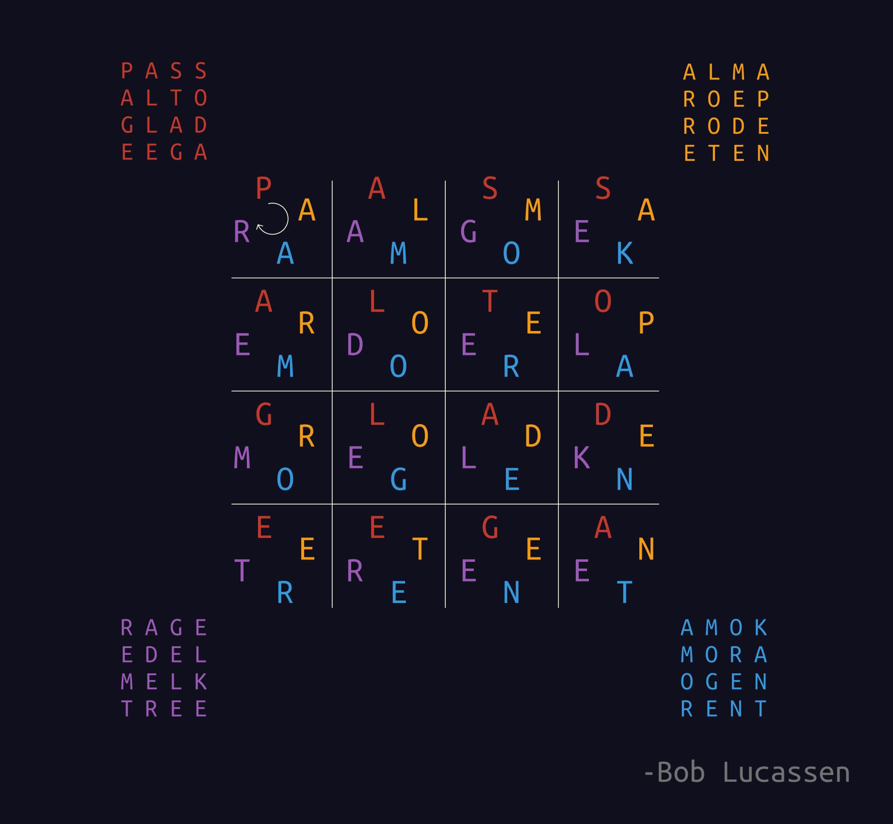

Voor mij was tot deze constructie het woord eega onbekend, wel goed voor je woordenschat dit soort spelletjes
https://nl.m.wiktionary.org/wiki/alma#Nederlands en staat in de woordenlijst Nederlandse taal.
Dankjewel, en bedankt voor de tip!
In deze comment https://www.reddit.com/r/thenetherlands/comments/jtg72r/comment/gc5bs0o staat een 8x8 vierkant met alleen dikke van Dale woorden, dat zou de maximale score op moeten leveren als ik het goed begrijp :)
Als in weer thuis ben zal ik de code even online gooien
Dat is één van mijn belangrijkste metrieken ik gebruik ook de gegevens van het centrum voor leesonderzoek, en in hoeveel woordenboeken een lemma voorkomt
Tellen afkortingen? Slang? Vervoegingen? Oud Nederlands wat wel in het woordenboek staat? Voor ieder van die dimensies kan ik een woord vinden wat net op het randje zit, wat dan telt is best subjectief.
Ben op mobiel maar ga m'n best doen.
Allereerst wil ik delen wat de input is voor een normaal 3x3 woordvierkant met horizontaal en verticaal andere woorden:
1 2 3
4 5 6
7 8 9
1 4 7
2 5 8
3 6 9
Het doel van het algo is om elk cijfer te vervangen door een letter zodat iedere regel een woord is uit een woordenboek. Het woordenboek kan ik opgeven per regel (we gaan zo zien waarom dit relevant is)
Een palindroom van 5 lang kan ik ook om vragen bijv: 1 2 3 2 1
Of een 4x4 vierkant met horizontaal en verticaal dezelfde woorden
1 2 3 4
2 5 6 7
3 6 8 9
4 7 9 10
We selecteren dan voor iedere regel in het bijbehorende woordenboek eerst de woorden die überhaupt kunnen, dus de juiste lengte maar ook vorm, mochten er dubbele cijfers zijn op een regel. Vervolgens schrijven we alle woorden zo op zodat de dubbele cijfers weg zijn en alle cijfers op volgorde staan. Bijv als we een complexe regel hebben als "2 1 3 1 2" waar " lepel" in past schrijven we lepel op als "elp"
Nu maken van deze "cijfer genormaliseerde" woordenlijsten een DAWG een boom van mogelijke woorden, als ik eerst deze letter kies, wat kan er dan volgen?
Nu gaan we door de cijfers heen op volgorde bij elke cijfer weten welke dawgs dat cijfer bevatten, we weten ook dat we precies een letter verder moeten, door de normalisatie. Dus kunnen we de overlap van alle valide letters van alle relevante dawgs nemen (een bitmask) . We plaatsen iedere mogelijke letter en gaan recursief naar de volgende.
Er zijn hiernaast nog een paar relevante punten: de volgorde van de cijfers maakt uit je wilt liever eerst letters gokken doe heel beperkt zijn, het optimaliseren van de topologie kun je van te voren doen.
Ten tweede wil je de oplossingen op volgorde van kwaliteit genereren dus alle woordenboeken worden in meerdere dawgs gesplitst met steeds minder voorkomende woorden.
Er zit ook nog wat intelligentie in de dawg optimaliseren, je wilt graag alle kinderen achter elkaar in geheugen hebben zodat elke volgende letter optie in één keer in cache terecht kan komen.
Programmeren is een belangrijk deel van het proces. Maar er zit nog best veel handwerk in, vooral in de selectie van woorden (ik heb simpelweg 12000 4 letter woorden beoordeeld met de hand) en beoordelen van kwaliteit van vierkanten.
Het is voor deze complexere "topologïen" ook niet meer een triviaal scriptje deser dagen, zeker niet als je exhaustive wilt zijn. Ik vraag me af of dit soort kubussen uberhaubt met de hand te doen zijn, mensen doen dit al 100en jaren (eg: sator vierkant, of hier in nederland van rederijkers tot Battus) maar er is voor computers nooit een groter vierkant gemaakt dan een 9² (7² in het NL) met horizontaal en verticaal dezelfde woorden. 3D vierkanten waren beperkt tot 3³ met dezelfde woorden in alle richtingen. Zelfs softwarematig was het tot nu toe beste een programma van Rex Gooch, welke meer dan een jaar (!, in 2000-2001) aan computatie heeft gebruikt voor een engels orde 10 vierkant te vinden. Ter vergelijking mijn software doet dit nu in enkele minuten, en kan dus ook andere vormen dan vierkanten.
Al met al is denken vanuit software noodzakelijk om nog iets nieuws te doen op dit gebied.
Zie deze comment voor een samenvatting: https://www.reddit.com/r/thenetherlands/comments/jxm29c/ik_heb_4_scrabblevlakken_gemaakt_die_als_je_ze_op/gcxh801?utm_source=share&utm_medium=web2x&context=3
Helemaal zonder dubbele woorden kan alleen als ik echt moeilijk te verdedigen 4 letter woorden gebruik, dus wat mij betreft niet. Maar het is moeilijk die claim heel hard te maken omdat wat telt als valide woord subjectief is op het moment dat je een klein stapje buiten het woordenboek zet. En wellicht mis ik net een cruciaal best goed verdigbaar woord waardoor het precies past.
Dus de conclusie: Ja dat kan in 3D met 3 letter woorden. Het kan waarschijnlijk net niet mooi in 3D met 4 letter woorden. En het kan zeer zeker niet in 3D met 5 letter woorden.
Nee, ben wel groot fan, heb hem ook wel eens na een show mogen ontmoeten en hij vindt dit soort vierkanten niet super interessant omdat je er niks mee kan op het podium! Ik zal binnenkort wat posten wat meer een ode is aan zijn slag van taligheden.
In ieder geval een groots compliment deze vraag :)
M'n vorige scrabble post kreeg lang niet voldoende kritiek over hoe een zinloze exercitie het is. Dus volgensmij kan de esoterie wel tikkie scherper. Naast deze hierboven zijn ook vierkanten in 4 dimensies mogelijk, maar alleen symmetrische (in de lengte breedte diepte en andere diepte dezelfde woorden). Neem de M in het eerste vierkant in het woord arme. Op diezelfde plek in de aangrenzende vierkanten staat o o en i. Samen "mooi" dit werkt ook verticaal, elke letter maakt dus deel uit van 4 woorden.
g a a f a r m e a m b t f e t a a r m e r o o m m o o i e m i r a m b t m o o i b o d e t i e t f e t a e m i r t i e t a r t s a r m e r o o m m o o i e m i r r o o m o u z o o z o n m o n o m o o i o z o n o o r d i n d o e m i r m o n o i n d o r o o i a m b t m o o i b o d e t i e t m o o i o z o n o o r d i n d o b o d e o o r d d r i e e d e l t i e t i n d o e d e l t o l k f e t a e m i r t i e t a r t s e m i r m o n o i n d o r o o i t i e t i n d o e d e l t o l k a r t s r o o i t o l k s i k h (1 korte reactie(s) weggelaten)